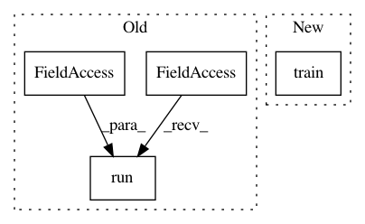

86ce5d52134a56806112ff8664e4034338e0e05a,yarll/agents/ppo/ppo.py,PPO,learn,#PPO#,208
Before Change
states, actions, advs, rs, _ = self.get_processed_trajectories()
advs = np.array(advs)
advs = (advs - advs.mean()) / advs.std()
self.session.run(self.set_old_to_new)
indices = np.arange(len(states))
for _ in range(int(self.config["n_epochs"])):
np.random.shuffle(indices)
After Change
batch_actions = np.array(actions)[batch_indices]
batch_advs = np.array(advs)[batch_indices]
batch_rs = np.array(rs)[batch_indices]
train_actor_loss, train_critic_loss, train_loss = self.train(batch_states,
batch_actions,
batch_advs,
batch_rs)
tf.summary.scalar("model/loss", train_loss, step=n_updates)
tf.summary.scalar("model/actor_loss", train_actor_loss, step=n_updates)
tf.summary.scalar("model/critic_loss", train_critic_loss, step=n_updates)
n_updates += 1
In pattern: SUPERPATTERN
Frequency: 3
Non-data size: 4
Instances
Project Name: arnomoonens/yarll
Commit Name: 86ce5d52134a56806112ff8664e4034338e0e05a
Time: 2019-03-21
Author: arno.moonens@gmail.com
File Name: yarll/agents/ppo/ppo.py
Class Name: PPO
Method Name: learn
Project Name: Scitator/catalyst
Commit Name: b272d77ce82f2d09e3accad9306c220665549a03
Time: 2019-03-05
Author: scitator@gmail.com
File Name: examples/experimental/simple_cifar.py
Class Name:
Method Name:
Project Name: IBM/adversarial-robustness-toolbox
Commit Name: 64764718080b11c8fb91df34c12e0ce8ac54aa4e
Time: 2018-05-15
Author: M.N.Tran@ibm.com
File Name: art/classifiers/pytorch.py
Class Name: PyTorchClassifier
Method Name: fit